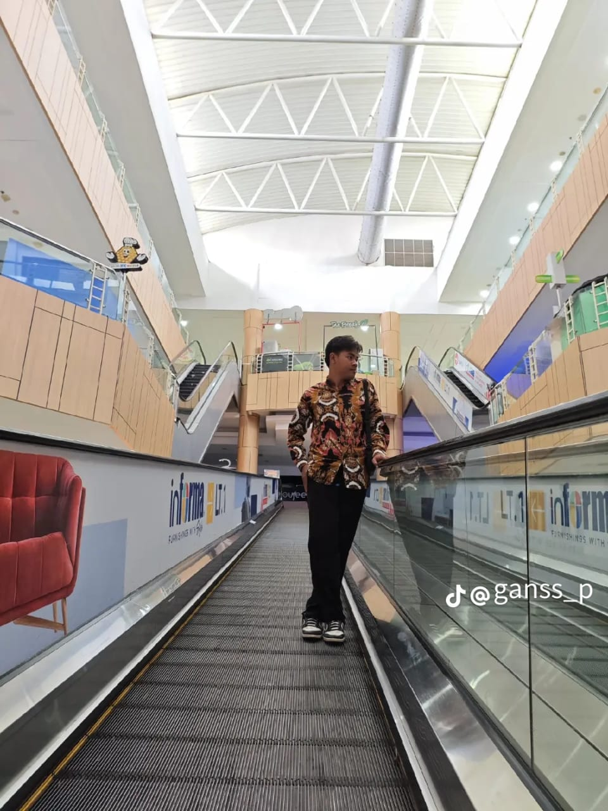

Seorang Mahasiswa di Unusida Ssidoarjo Prodi informatika , saya juga seorang yang suka bergaul sama oarang baru saya di kampus meengikuti berapa ukm dan ormek Digital Strategist & Content Creator yang fokus pada membangun narasi brand yang kuat.

saya Sudah Berusia 21 tahun ukm yang saya ikuti ada 2 yaitu: TEATER SAE Dan NS Dan Beberpa Organisasi Yaitu: IPNU Dan PMII Saya sudah Menghendel Beberapa Acara Sedik banyak Saya tahu Membuat Acara